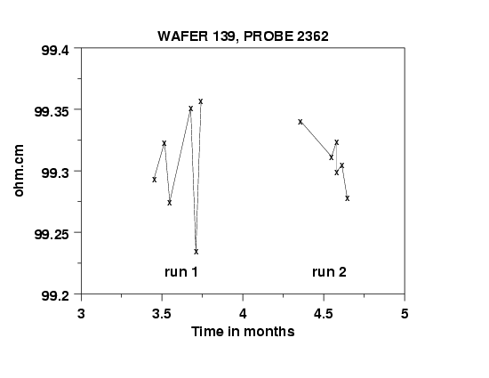

|
2.
Measurement Process Characterization
2.6. Case studies 2.6.1. Gauge study of resistivity probes
|
|||
| Effects of days and long-term stability on the measurements | The data points that are plotted in the five graphs shown below are averages of resistivity measurements at the center of each wafer for wafers #138, 139, 140, 141, 142. Data for each of two runs are shown on each graph. The six days of measurements for each run are separated by approximately one month and show, with the exception of wafer #139, that there is a very slight shift upwards between run 1 and run 2. The size of the effect is estimated as a level-3 standard deviation in the analysis of the data. | ||
| Wafer 138 |
|
||
| Wafer 139 |  | ||
| Wafer 140 |
|
||
| Wafer 141 |
|
||
| Wafer 142 |
|
||